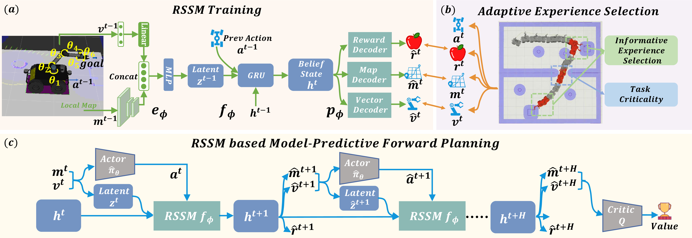

Experiment Scenario 1
Execute a short-path task to pick up and deposit the water bottle at the specified target.(10X Speed)
Mobile Manipulation (MM) involves long-horizon decision-making over multi-stage compositions of heterogeneous skills, such as navigation and picking up objects. Despite recent progress, existing MM methods still face two key limitations: (i) low sample efficiency, due to ineffective use of redundant data generated during long-term MM interactions; and (ii) poor spatial generalization, as policies trained on specific tasks struggle to transfer to new spatial layouts without additional training. In this paper, we address these challenges through Adaptive Experience Selection (AES) and model-based dynamic imagination. In particular, AES makes MM agents pay more attention to critical experience fragments in long trajectories that affect task success, improving skill chain learning and mitigating skill forgetting. Based on AES, a Recurrent State-Space Model (RSSM) is introduced for Model-Predictive Forward Planning (MPFP) by capturing the coupled dynamics between the mobile base and the manipulator and imagining the dynamics of future manipulations. RSSM-based MPFP can reinforce MM skill learning on the current task while enabling effective generalization to new spatial layouts. Comparative studies across different experimental configurations demonstrate that our method significantly outperforms existing MM policies. Real-world experiments further validate the feasibility and practicality of our method.
The proposed method encodes raw observations into a latent space to streamline the training of the Recurrent State-Space Model (RSSM). By integrating an Adaptive Experience Selection (AES) mechanism, the framework prioritizes task-critical information, thereby ensuring the learning of robust representations. During inference, the policy network leverages RSSM-based MPFP to simulate prospective trajectories, facilitating more precise and informed decision-making.
Table 1: Comparative studies are conducted in the cross-room experimental configuration to demonstrate the superiority of our method. Bold indicates the best performance, and underline indicates the second best.
| Method | Cross-room | |||
|---|---|---|---|---|
| AIKF↓ | ABC↓ | TCR↑ | PSR↑ | |
| End-to-End MM | - | - | 0 | 0 |
| BHyRL | 12.1 | 2.8 | 21 | 19 |
| N2M2 | 11.3 | 2.2 | 29 | 17 |
| Dreamer V3 | 8.1 | 2.0 | 54 | 40 |
| TD-MPC2 | 9.9 | 1.2 | 46 | 41 |
| AuxDistill | 8.8 | 1.3 | 57 | 42 |
| Ours | 4.1 | 2.0 | 81 | 54 |
Note: AIKF: Average IK solver failure rate; ABC: Average base collision rate; TCR: Target completion rate; PSR: Perfect success rate. Symbols ↓ and ↑ indicate that lower or higher values are better, respectively.
Table 2: Extensive comparative experiments across three additional distinct scenarios to provide a more comprehensive demonstration of our model's superior performance in handling diverse environmental complexities.
| Method | Home-scene | Warehouse | Dynamic-scene | |||||||||
|---|---|---|---|---|---|---|---|---|---|---|---|---|
| AIKF↓ | ABC↓ | TCR↑ | PSR↑ | AIKF↓ | ABC↓ | TCR↑ | PSR↑ | AIKF↓ | ABC↓ | TCR↑ | PSR↑ | |
| N2M2 | 11.0 | 2.3 | 32 | 18 | 7.1 | 0.0 | 68 | 56 | 16.5 | 6.4 | 12 | 3 |
| Dreamer V3 | 9.3 | 1.6 | 64 | 45 | 5.3 | 0.4 | 80 | 61 | 9.0 | 3.1 | 44 | 40 |
| TD-MPC2 | 10.7 | 1.5 | 56 | 32 | 6.0 | 0.5 | 74 | 60 | 8.9 | 5.0 | 40 | 35 |
| Ours | 3.6 | 0.1 | 90 | 66 | 3.0 | 0.0 | 96 | 76 | 5.8 | 5.6 | 58 | 39 |
Table 3: Zero-shot generalization performance of models trained exclusively in Cross-Room and evaluated across unseen environments without additional training.
| Method | Home-scene | Warehouse | Dynamic-scene | |||||||||
|---|---|---|---|---|---|---|---|---|---|---|---|---|
| AIKF↓ | ABC↓ | TCR↑ | PSR↑ | AIKF↓ | ABC↓ | TCR↑ | PSR↑ | AIKF↓ | ABC↓ | TCR↑ | PSR↑ | |
| N2M2 | 15.1 | 1.4 | 29 | 15 | 14.3 | 0.0 | 19 | 11 | 18.7 | 4.1 | 10 | 5 |
| Dreamer V3 | 9.7 | 1.9 | 44 | 40 | 7.2 | 0.0 | 45 | 39 | 9.9 | 3.7 | 39 | 33 |
| TD-MPC2 | 13.8 | 0.7 | 32 | 16 | 9.5 | 2.2 | 40 | 32 | 9.2 | 5.5 | 35 | 25 |
| Ours w/o MPFP | 12.3 | 0.6 | 46 | 22 | 8.6 | 0.0 | 45 | 41 | 10.5 | 4.4 | 35 | 29 |
| Ours | 8.7 | 0.5 | 61 | 42 | 4.3 | 0.0 | 70 | 60 | 6.3 | 6.9 | 45 | 32 |
Execute a short-path task to pick up and deposit the water bottle at the specified target.(10X Speed)
Pick up and place the water bottle at the designated location via a long path while avoiding obstacles.(10X Speed)
Pick up the water bottle and hand it over to the person in the camera view.(10X Speed)
@article{SG-MM,
title={Spatially Generalizable Mobile Manipulation via Adaptive Experience Selection and Dynamic Imagination},
journal={International Joint Conference on Artificial Intelligence},
author={Ping Zhong and Liangbai Liu and Bolei Chen and Tao Wu},
year={2026},
}